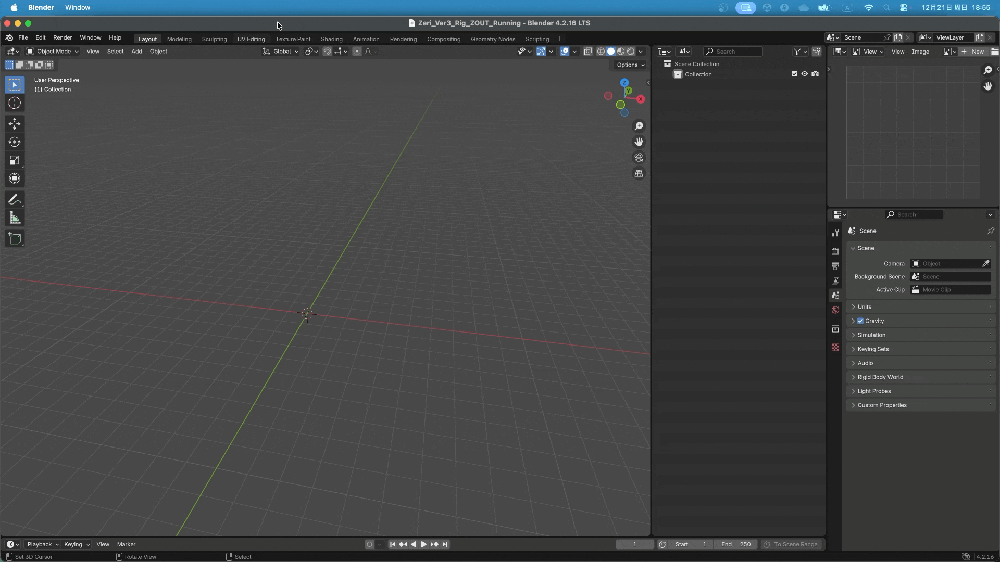
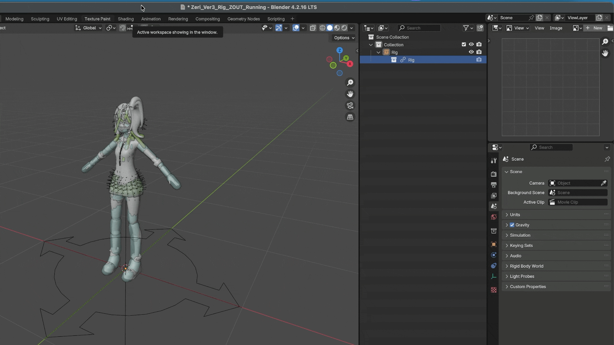

链接 & 库覆盖
在 Blender 中，链接（Linking） 是一项强大的功能，它允许你在多个项目间重用资源而无需复制。当你从外部 .blend 文件链接 对象（Object） 或 集合（Collection） 时，它在当前项目中会保持只读状态。若需修改，则必须创建 库覆盖（Library Override），生成一个可在本地编辑的链接数据副本。
该工作流程在大型项目和团队协作中尤为实用，它允许多个场景共享相同资源，同时确保修改在源文件中统一进行。
然而，当角色包含大量刚体和约束时，管理链接的骨架、库覆盖及相关物理设置可能会变得复杂。
本插件使用 Root Empty 作为所有辅助对象的单一父对象，从而简化 链接 和 库覆盖 操作。
链接
在 链接 使用本插件的角色骨架时，通常只需链接包含 Root Empty 的集合。
在实际工作流程中，角色通常从 绑定文件 链接到 动画文件：
选择 ，打开 Blender 文件浏览器。
定位到包含角色骨架的
.blend文件。打开该文件，并选择包含 Root Empty 的集合。
确认选择，将该集合链接到当前场景。

库覆盖
链接 集合后，需要为其创建 库覆盖：
在 大纲视图（Outliner） 中选择已链接的集合。
使用 。
Blender 会为该集合中所有支持覆盖的对象生成本地覆盖数据。

备注
由于 Blender 当前库覆盖系统的限制，有时需要执行 两次 覆盖操作，才能确保所有嵌套对象（例如刚体、约束和辅助对象）都被正确覆盖。
这是 Blender 已知的限制，并非本插件特有的问题。
可覆盖属性
由于 Blender 的 库覆盖 系统设计，某些属性无法在本地编辑，必须在源文件中进行修改。
此外，本插件还会刻意锁定部分属性，禁止在本地编辑，以避免意外修改关键物理参数，从而导致模拟不稳定。
不可覆盖的属性会在 属性面板 中显示为 灰色。

如果需要修改这些属性：
打开绑定源文件
在该文件中进行修改。
保存文件。
在动画文件中 重新加载库覆盖（Reload）。
警告
在动画播放过程中调整可覆盖属性（例如 Rigid Body Mass 或 Joint Angle Limits）时，请务必先保存文件。
尽管这些属性在技术上可以被覆盖，但在物理模拟正在计算时修改它们，可能会因为物理求解器的不稳定而导致 Blender 崩溃。